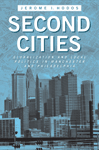

|
Abuse of Power
How Cold War Surveillance and Secrecy Policy Shaped the Response to 9/11
Theoharis, Athan
An argument that domestic surveillance erodes civil liberties and fails to protect the country
232 pp • 6x9 • Spring 2011
paper 978-1-4399-0665-1
cloth 978-1-4399-0664-4
|
|
Alphabet Movers
Benzwie, Teresa, Illustrated by Robert Bender
Young children dance their way through the alphabet, learning as they play
32 pp • 8.5x11 • Spring 2011
cloth 978-1-930798-08-3 |
|
The American Dream in the 21st Century
Edited by Hanson, Sandra L. and John Kenneth White
A multidisciplinary conversation on the state of the American Dream
168 pp • 5.5x8.25 • Spring 2011
paper 978-1-4399-0315-4
cloth 978-1-4399-0314-8 |
|
American History Now
Edited for the American Historical Association by Eric Foner and Lisa McGirr
A new generation of scholars addresses the current themes and questions in interpreting American history
440 pp • 6x9 • Spring 2011
paper 978-1-4399-0244-8
cloth 978-1-4399-0243-1 |
|
As French as Everyone Else?
A Survey of French Citizens of Maghrebin, African, and Turkish Origin
Brouard, Sylvain and Vincent Tiberj
Foreword by Paul M. Sniderman
Translated by Jennifer Fredette
Shedding new light on integration and citizenship in France to reveal the ways in which immigrants do-and do not-share the attitudes of the majority population
152 pp • 5.5x8.25 • Spring 2011
paper 978-1-4399-0296-7
cloth 978-1-4399-0295-0 |
|
Asian American Plays for a New Generation
Edited by Lee, Josephine, Don Eitel, and R. A. Shiomi
Asian American plays from the heartland
336 pp • 6x9 • Spring 2011
paper 978-1-4399-0516-6
cloth 978-1-4399-0515-9 |
|
Baltimore '68
Riots and Rebirth in an American City
Edited by Elfenbein, Jessica I., Thomas L. Hollowak, and Elizabeth M. Nix
The first comprehensive study of one city, Baltimore, forty years after the unrest that swept across some 120 U.S. cities
294 pp • 6x9 • Spring 2011
paper 978-1-4399-0662-0
cloth 978-1-4399-0661-3 |

|
Cheaper by the Hour
Temporary Lawyers and the Deprofessionalization of the Law
Brooks, Robert
How attorneys' work is deprofessionalized, downgraded, and controlled through part-time and temporary assignments
234 pp • 6x9 • Spring 2011
cloth 978-1-4399-0285-1 |

|
The City on the Hill from Below
The Crisis of Prophetic Black Politics
Marshall, Stephen
A compelling conversation between African American political intellectuals and the canon of western political philosophy
250 pp • 6x9 • Spring 2011
cloth 978-1-4399-0655-2 |
|
Distant Corners
American Soccer's History of Missed Opportunities and Lost Causes
Wangerin, David
From bestselling author David Wangerin, a history of America's curious relationship with the "beautiful game"
264 pp • 6x9 • Spring 2011
cloth 978-1-4399-0630-9 |
|
How Racism Takes Place
Lipsitz, George
How racism shapes urban spaces and how African Americans create vibrant communities that offer models for more equitable social arrangements
320 pp • 6x9 • Spring 2011
paper 978-1-4399-0256-1
cloth 978-1-4399-0255-4 |
|
How to Be South Asian in America
Narratives of Ambivalence and Belonging
jain, anupama
A variety of immigrant narratives portray the dynamic process of South Asian Americanization
288 pp • 6x9 • Spring 2011
paper 978-1-4399-0303-2
cloth 978-1-4399-0302-5
|
|
Israel's Dead Soul
Salaita, Steven
How Zionism became an exceptional ideology in the eyes of the West
176 pp • 5.5x8.25 • Spring 2011
paper 978-1-4399-0638-5
cloth 978-1-4399-0637-8 |
|
Living in the Crossfire
Favela Residents, Drug Dealers, and Police Violence in Rio de Janeiro
Alves, Maria Helena Moreira and Philip Evanson
Communities organizing to end Brazil's urban war on drugs
254 pp • 6x9 • Spring 2011
paper 978-1-4399-0004-8
cloth 978-1-4399-0003-1 |
|
Mexican Voices of the Border Region
Velasco Ortiz, Laura and Oscar F. Contreras, with translations by Sandra del Castillo
How the border shapes the experiences and opportunities of Mexicans on each side
238 pp • 6x9 • Spring 2011
paper 978-1-59213-909-5
cloth 978-1-59213-908-8 |

|
Modeling Citizenship
Jewish and Asian American Writing
Schlund-Vials, Cathy
In fiction and nonfiction, Asian Americans and Jewish Americans grapple with their "model minority" status and the contested nature of citizenship
248 pp • 6x9 • Spring 2011
paper 978-1-4399-0318-6
cloth 978-1-4399-0317-9 |
|
Moral Problems in Higher Education
Edited by Cahn, Steven M.
A reader on the key ethical dilemmas confronting higher education
264 pp • 6x9 • Spring 2011
paper 978-1-4399-0659-0
cloth 978-1-4399-0658-3 |
|
My Soul's Been Psychedelicized
Electric Factory: Four Decades in Posters and Photographs
Magid, Larry with Robert Huber
Philadelphia's popular music scene and the concert promoters who shaped it for more than forty years
200 pp • 10x12 • Spring 2011
cloth 978-1-4399-0180-9 |
|
Numbers on the Move
1 2 3 Dance and Count with Me
Benzwie, Teresa, Illustrated by Mark Weber
Young children learn by moving and dancing in this playful book for children ages four through ten
32 pp • 11x8.5 • Spring 2011
cloth 978-1-4399-0342-1 |
|
The Persuasive Power of Campaign Advertising
Ridout, Travis N. and Michael M. Franz
How campaign ads persuade voters
200 pp • 5.5x8.25 • Spring 2011
paper 978-1-4399-0333-9
cloth 978-1-4399-0332-2 |
|
The PHS City Parks Handbook
Pennsylvania Horticultural Society
A resource for those who care about creating, reclaiming, and maintaining urban parks
112 pp • 8.5x8.5 • Spring 2011
paper 978-0-615-26081-5 |
|
The Production of Modernization
Daniel Lerner, Mass Media, and The Passing of Traditional Society
Shah, Hemant
How Daniel Lerner's seminal work contributed to the overall professionalization of communication theory and sociology
226 pp • 6x9 • Spring 2011
cloth 978-1-4399-0624-8
|
|
Public Financing in American Elections
Edited by Panagopoulos, Costas
The first book-length treatment of the public financing of elections in the United States
268 pp • 6x9 • Spring 2011
paper 978-1-4399-0693-4
cloth 978-1-4399-0692-7 |
|
Race Appeal
How Candidates Invoke Race in U.S. Political Campaigns
McIlwain, Charlton D. and Stephen M. Caliendo
Why, when, and how often candidates use race appeals, and how the electorate responds
272 pp • 6x9 • Spring 2011
paper 978-1-4399-0276-9
cloth 978-1-4399-0275-2 |
 |
Second Cities
Globalization and Local Politics in Manchester and Philadelphia
Hodos, Jerome
How Philadelphia and Manchester have successfully grappled with globalization, carving out a series of distinctive niche roles for themselves over time
264 pp • 6x9 • Spring 2011
cloth 978-1-4399-0231-8 |
|
Sonic Spaces of the Karoo
The Sacred Music of a South African Coloured Community
Jorritsma, Marie
A groundbreaking study of music in an ethnically marginalized South African community
224 pp • 6x9 • Spring 2011
cloth 978-1-4399-0237-0 |
|
The SPHAS
The Life and Times of Basketball's Greatest Jewish Team
Stark, Doug, Foreword by Lynn Sherr
The history of the South Philadelphia Hebrew Association's basketball team and the legends it spawned
344 pp • 6x9 • Spring 2011
cloth 978-1-59213-633-9 |
|
The Strange Music of Social Life
A Dialogue on Dialogic Sociology
Bell, Michael Mayerfeld, edited by Ann Goetting
How the music of human interaction can help us better understand the nature of social science research
248 pp • 5.5x8.25 • Spring 2011
paper 978-1-4399-0724-5
cloth 978-1-4399-0723-8 |

|
"To Serve a Larger Purpose"
Engagement for Democracy and the Transformation of Higher Education
Edited by Saltmarsh, John and Matthew Hartley
How to return democracy to the heart of a university's mission
326 pp • 6x9 • Spring 2011
cloth 978-1-4399-0506-7 |
|
Under New Management
Universities, Administrative Labor, and the Professional Turn
Martin, Randy
A balanced review of the changing nature of the corporate university
272 pp • 6x9 • Spring 2011
cloth 978-1-4399-0695-8 |

|
Violent Belongings
Partition, Gender, and National Culture in Postcolonial India
Daiya, Kavita
How the Partition of India set in motion the violence, ethnic divisions, and dislocations that continue into our own time
New in Paperback!
274 pp • 6x9 • Spring 2011
paper 978-1-59213-744-2 |
Click here
to download the catalog (pdf). |